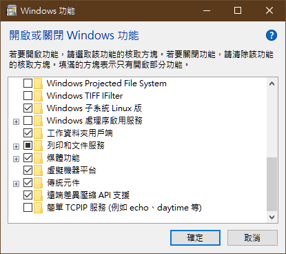
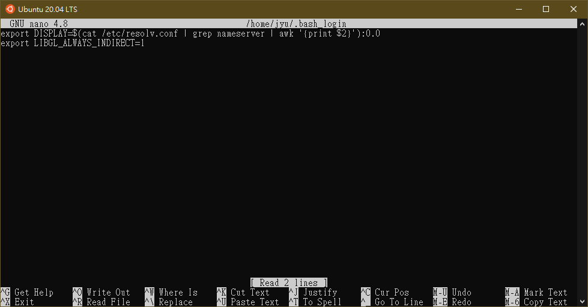
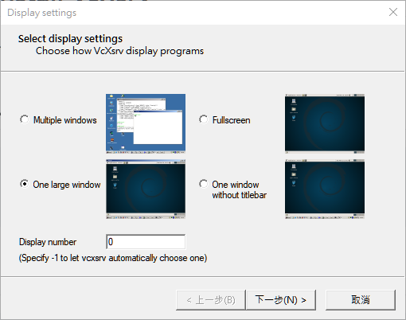
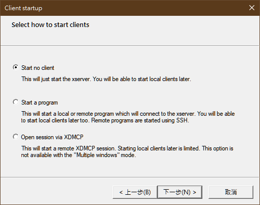
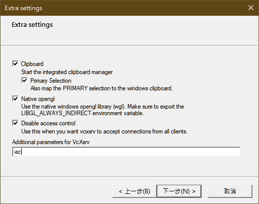
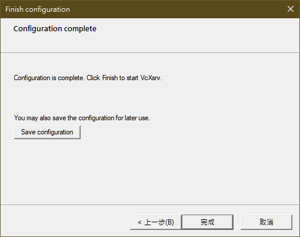
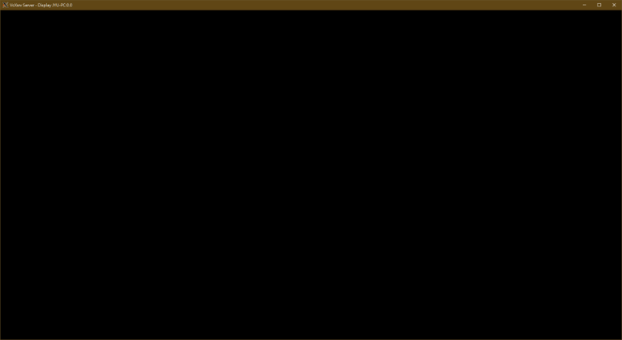
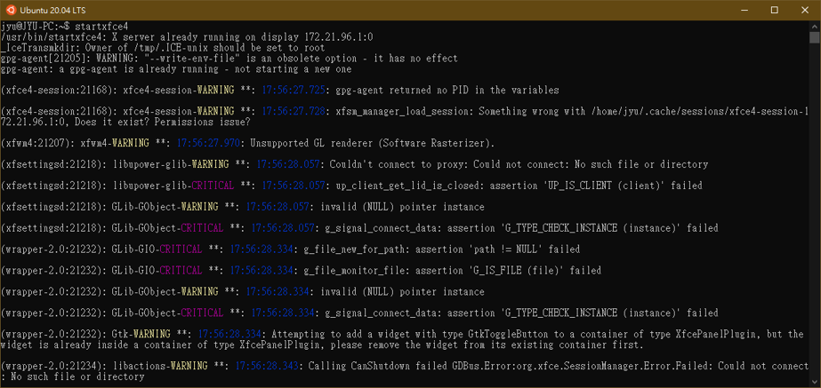
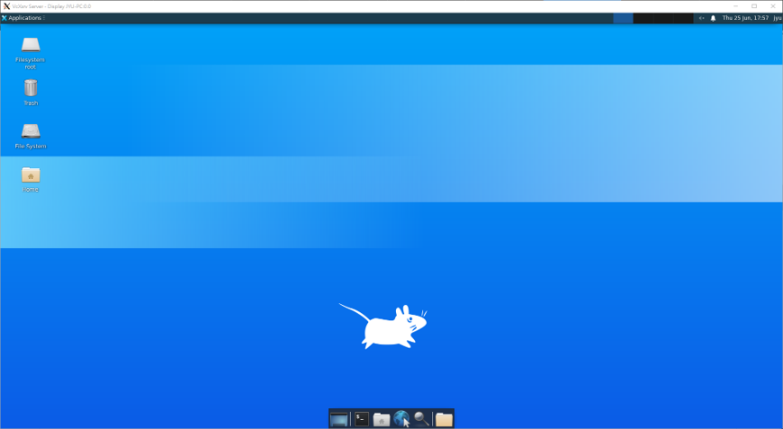
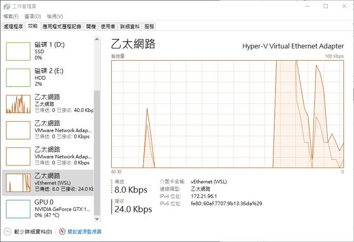

此筆記內容為紀錄筆者在建置WSL2過程中操作與問題。
關於 Windows 子系統 Linux 版 https://docs.microsoft.com/zh-tw/windows/wsl/about
要使用WSL2必須先符合以下條件
官方安裝指南 https://docs.microsoft.com/zh-tw/windows/wsl/install-win10
設定使用WSL2為預設使用版本
wsl --set-default-version 2
需要去控制台—>程式和功能—>開啟或關Windows功能->勾選Windows子系統Linux版與虛擬機器平台

開啟完畢後會跑更新，跑完更新之後會需要重開電腦。
下載X server連線工具，使用VcXsrv
https://sourceforge.net/projects/vcxsrv/
下載完畢後執行程式安裝完即可。
開啟Ubuntu 20.04 LTS終端機
執行安裝 X Server 套件
sudo apt-get install x11-apps
在家目錄(~/)底下建立一個.bash_login
nano ~/.bash_login
並輸入以下內容

按Ctrl+x後再按Y最後在按Enter儲存。
執行安裝 xfce4 桌面
sudo apt-get install xfce4-terminal
sudo apt-get install xfce4
回到Windows開啟VcXsrv主程式(XLaunch)

Display number 記得設置為0



點選完成，出現下面視窗畫面即可

在Ubuntu 20.04 LTS終端機啟動X Server，輸入下面指令
startxfce4


剛開始建立好啟動X Server時，並沒有預期那麼順利運作起來，碰到X Server運作不起來顯示下面訊息
Can't connect to display 172.21.96.1:0
172.21.96.1是我的WSL區網虛擬主幹，可以在工作管理員看到

在筆者Ubuntu 20.04 LTS所取得IP是在屬於此虛擬區網主幹內，此主幹在防火牆預設使用防護規則屬於公用網路，筆者在執行VcXsrv過程中彈出的防火牆允許視窗中，只勾選了允許私人網路而沒勾到公用網路，摸索研究半天才發現這個問題。
解決方式為去防火牆更設定允許應用程式或功能通過Windows Defender防火牆設定中， 將 VcXsrv windows xserver 在公用項目打勾即可。